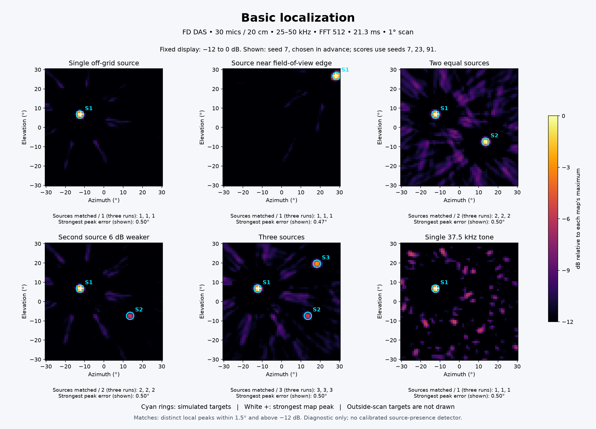
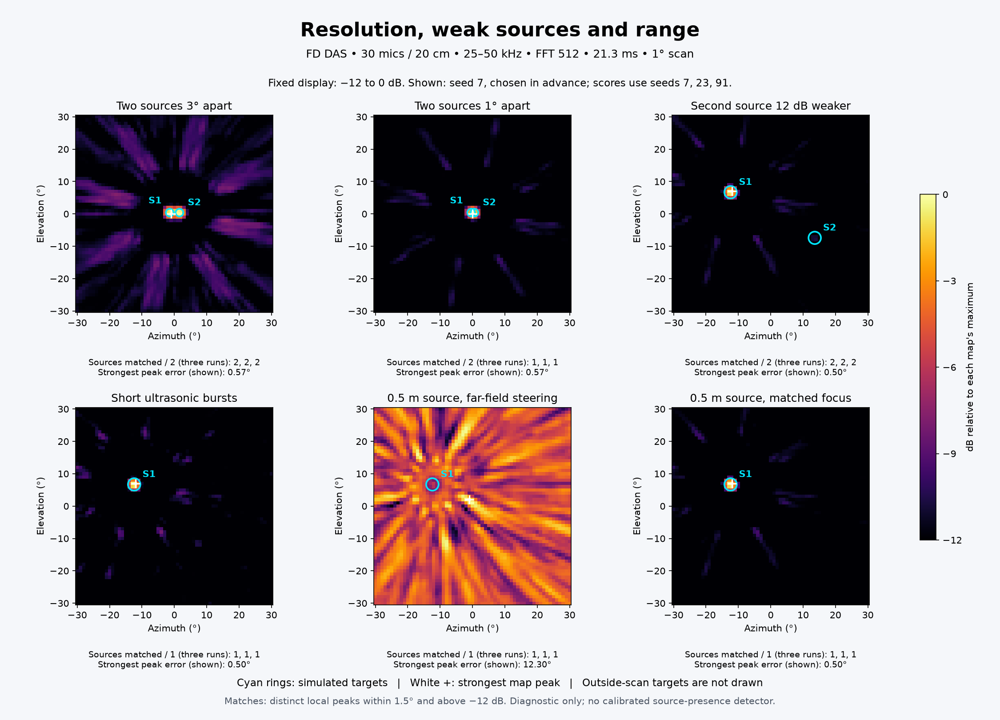
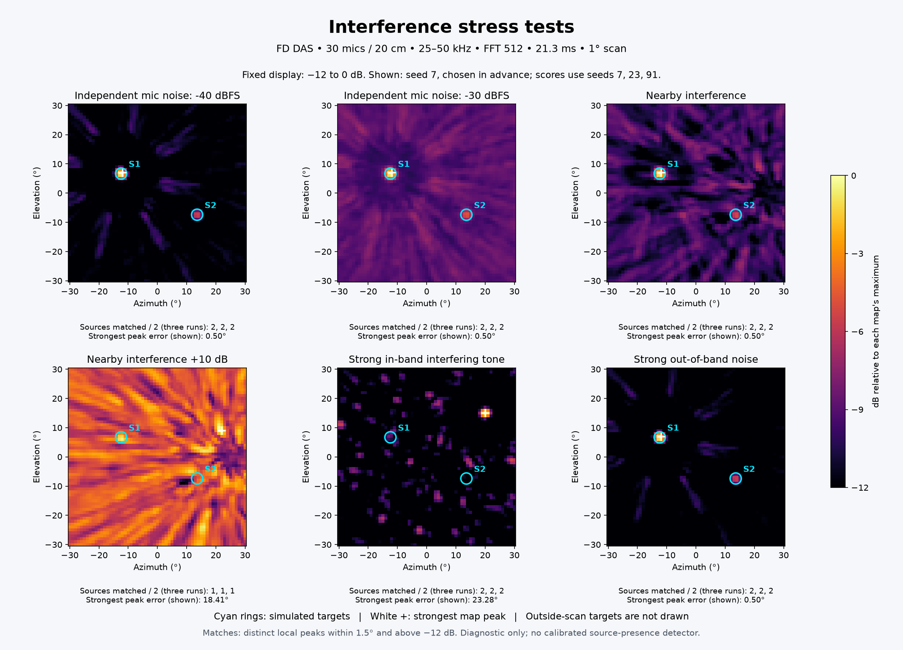
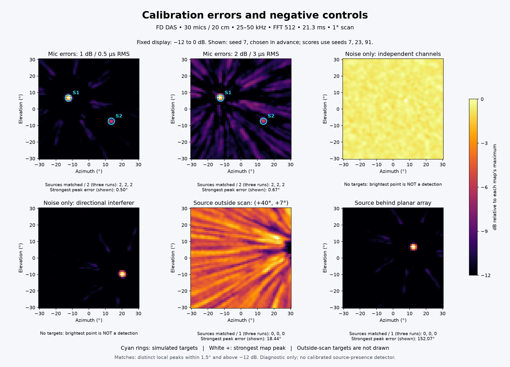
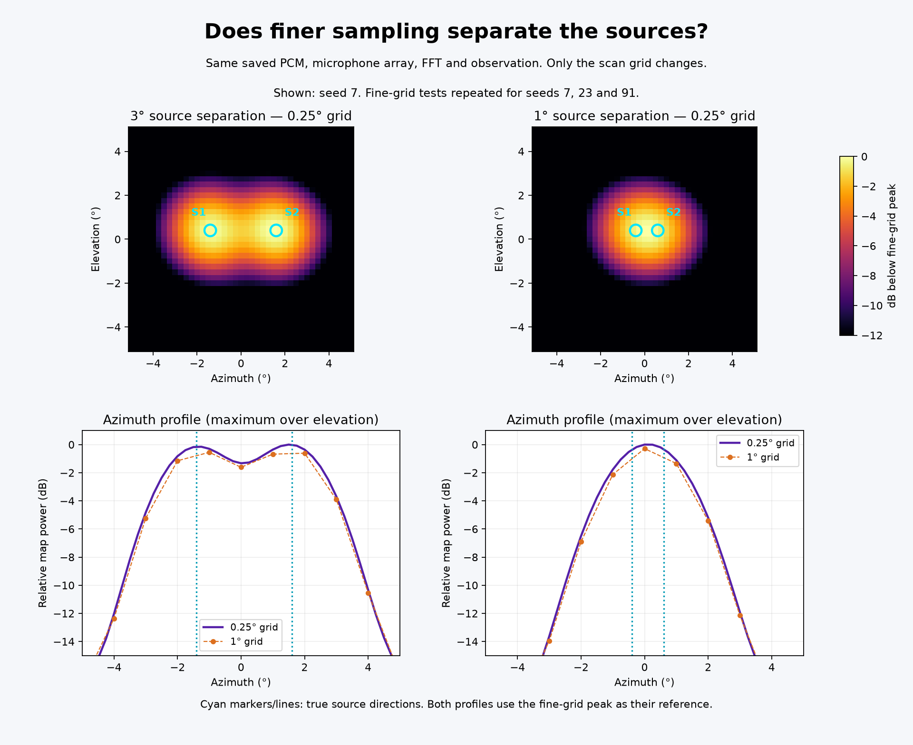

30 microphones, 20 cm aperture, 192 ksample/s, 25–50 kHz, FFT 512, 21.33 ms observation, 1° grid. Floating point; no added noise suppression.
Plots always show seed 7; scores cover seeds 7, 23 and 91. Each map uses its own maximum and the same −12 to 0 dB display range. Click a plot for full resolution.
Interpretation: a match is a distinct local maximum within 1.5° of a true source and above −12 dB. It does not establish PD identity or source presence. A merged peak counts only once. Noise-only scenes can have bright peaks. These hand-picked cases do not define an overall accuracy rate.





Source matches list all three runs, followed by the number of true sources. Maximum error covers matched sources only. Strongest extra peak is the largest local maximum farther than 1.5° from all targets, across the three runs; it can be a sidelobe or interference. Seconds measure Python processing only.
| Case | Matches | Max matched error | Strongest extra peak | Median seconds |
|---|---|---|---|---|
| Single off-grid source Off-grid localization sanity check. | 1, 1, 1 / 1 | 0.50° | -9.4 dB | 4.89 |
| Source near field-of-view edge Edge steering accuracy. | 1, 1, 1 / 1 | 0.47° | -10.2 dB | 4.90 |
| Two equal sources Separate independent broadband sources. | 2, 2, 2 / 2 | 0.56° | -7.8 dB | 4.98 |
| Second source 6 dB weaker Moderate source dynamic range. | 2, 2, 2 / 2 | 0.56° | -9.1 dB | 5.24 |
| Three sources More than two simultaneous sources. | 3, 3, 3 / 3 | 0.56° | -8.5 dB | 4.91 |
| Single 37.5 kHz tone Narrowband ambiguity versus broadband. | 1, 1, 1 / 1 | 0.50° | -5.6 dB | 4.91 |
| Two sources 3° apart Resolution at small angular separation. | 2, 2, 2 / 2 | 0.57° | -7.3 dB | 4.82 |
| Two sources 1° apart Deliberately unresolved stress case; one peak cannot count twice. | 1, 1, 1 / 2 | 0.57° | -9.4 dB | 5.17 |
| Second source 12 dB weaker Weak source near display cutoff and sidelobes. | 2, 2, 2 / 2 | 0.72° | -9.4 dB | 5.19 |
| Short ultrasonic bursts Synthetic 1 ms bursts, not a measured discharge waveform. | 1, 1, 1 / 1 | 0.50° | -8.2 dB | 4.76 |
| 0.5 m source, far-field steering Wavefront curvature mismatch at close range. | 1, 1, 1 / 1 | 0.50° | 0.0 dB | 4.18 |
| 0.5 m source, matched focus Same near source with spherical steering focused at 0.5 m. | 1, 1, 1 / 1 | 0.50° | -9.5 dB | 6.09 |
| Independent mic noise: -40 dBFS Broadband channel noise; stronger source is about -40 dBFS at 10 m. Levels are uncalibrated. | 2, 2, 2 / 2 | 0.56° | -8.8 dB | 4.97 |
| Independent mic noise: -30 dBFS Broadband channel noise; stronger source is about -40 dBFS at 10 m. Levels are uncalibrated. | 2, 2, 2 / 2 | 0.56° | -6.8 dB | 5.08 |
| Nearby interference Coherent synthetic 20–60 kHz point interferer at [0.15,0,-0.30] m; not a measured drone. | 2, 2, 2 / 2 | 0.72° | -6.2 dB | 4.73 |
| Nearby interference +10 dB Coherent synthetic 20–60 kHz point interferer at [0.15,0,-0.30] m; not a measured drone. | 1, 1, 1 / 2 | 0.81° | 0.0 dB | 5.62 |
| Strong in-band interfering tone 40 kHz far-field interferer at (+20,+15), 10 dB above strongest source at equal range. | 2, 2, 2 / 2 | 0.72° | 0.0 dB | 4.53 |
| Strong out-of-band noise Independent 1–15 kHz noise at -20 dBFS; ideal linear input, no clipping/nonlinearity. | 2, 2, 2 / 2 | 0.56° | -9.1 dB | 4.40 |
| Mic errors: 1 dB / 0.5 µs RMS Independent Gaussian channel gain/delay errors, unknown to steering. | 2, 2, 2 / 2 | 0.56° | -8.9 dB | 4.40 |
| Mic errors: 2 dB / 3 µs RMS Independent Gaussian channel gain/delay errors, unknown to steering. | 2, 2, 2 / 2 | 0.72° | -5.7 dB | 4.16 |
| Noise only: independent channels No source; normalized map still has a brightest point. | No targets | — | 0.0 dB | 4.72 |
| Noise only: directional interferer No target; physical interference can form a convincing peak. | No targets | — | 0.0 dB | 4.34 |
| Source outside scan: (+40°, +7°) Source is off-plot; sidelobes can appear inside the field of view. | 0, 0, 0 / 1 | — | 0.0 dB | 3.95 |
| Source behind planar array Front/back ambiguity of an ideal omnidirectional planar array. | 0, 0, 0 / 1 | — | 0.0 dB | 3.95 |
Limitations: synthetic uncalibrated levels, flat omnidirectional microphones, no measured drone/PD recordings, reflections, motion, weather or PDM acquisition model. Not a field detection-range or reliability claim. Full settings, PCM and scores are saved per case and seed.